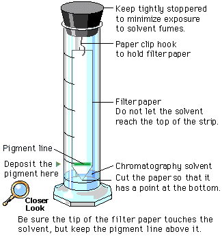

In the following activity, you will separate plant pigments using an organic solvent such as a mixture of ether and acetone. Be sure to keep the bottle tightly closed except when you are using it because the solvent is very volatile and produces fumes you should not breathe. In the following activity, you will separate plant pigments using an organic solvent such as a mixture of ether and acetone. Be sure to keep the bottle tightly closed except when you are using it because the solvent is very volatile and produces fumes you should not breathe.
|
In paper chromatography the pigments are dissolved in a solvent that carries them up the paper. In the ink example, the solvent is water. To separate the pigments of the chloroplasts, you must use an organic solvent.

The next screen shows you the separation of plant pigments.
 Continue to Pigment Separation.
Continue to Pigment Separation.